AI Academy · Level 2 · Grade 7 · Week 5 · Student lesson
Loops and Stopping
Learn to understand, design, build, test and explain AI systems responsibly.
Project: Transparent Book Recommender
Before you start
Week 4: update and record a variable's state.
Plan time to read, investigate and explain. Keep predictions separate from observations.
Student lesson · 1 of 16
Your mission
Your learning target
I can trace variable values before and after each loop iteration.
I can use the excluded stop value in range correctly.
I can explain initialization and test zero one and several iterations.
Remember before reading
Close your notes first. A rough first answer helps us choose the right starting point; it is not a score for your ability.
Without opening the old lesson, explain one key idea from Trace Tables. Give an example and a mistake that the idea helps you avoid.
Without opening the old lesson, explain one key idea from Decompose a Goal. Give an example and a mistake that the idea helps you avoid.
After trying, check the relevant lesson or ask your teacher. Change the part of your explanation that the evidence shows was wrong.
Week 5: Loops and Stopping
Useful repetition needs a clear update and stopping rule.
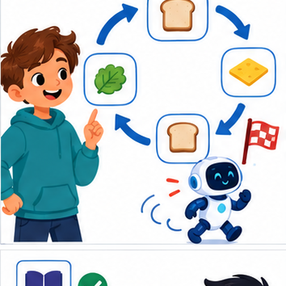
THINKER MISSION
Predict loop counts; repair one infinite loop.
Thinker name and date:
Readiness for the connected explanation
Starting with total = 2, what does total = total + 3 store?
This week’s end goal
By the end, I can trace a while-loop and recognise when its update cannot satisfy the stopping test.
Student lesson · 2 of 16
Notice the evidence
PICTURE STORY
Notice → Predict → Explain
Begin with visible evidence. Do not explain more than the picture and information support.
MYSTERY
The learners must use loops and stopping to solve a problem. What information do they have? What decision or calculation do they make? What would count as evidence that it worked?
Three observations (what you can point to):
My prediction and the clue supporting it:
A closer explanation
Imagine adding numbered counters: first 1, then 2, then 3. A loop can repeat the same addition with a different number each time. This week you will predict each change before running a short Python script. Tracing repeated calculations prepares you to inspect the data processing used in larger AI applications.
In for turn in range(1, 4), Python supplies 1, 2 and 3 in order. The start is included and the stop is excluded. The indented body runs once for each supplied value. The colon and four-space indentation mark that body. This lesson uses integer range values with the default positive step of 1.
Student lesson · 3 of 16
See how it works
VISUAL MECHANISM
Input → Process → Output
Trace the information. At each stage, ask what changed and how you could test it.
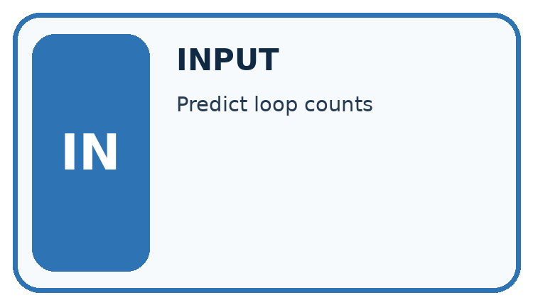
↓
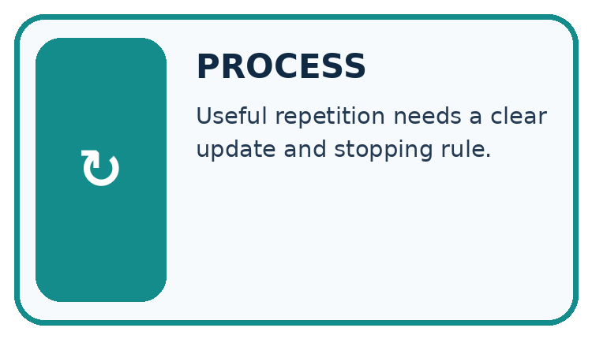
↓
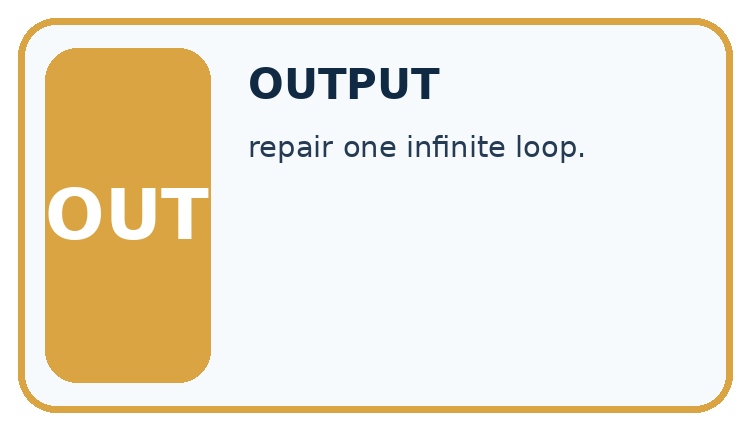
Which stage could fail even when the other two are correct? Explain:
A closer explanation
total = 0
for turn in range(1, 4):
total = total + turn
print(total)State after each addition
The output is 6. Before the first iteration, total is 0. Each assignment reads the previous total and adds the current turn. After turn 3, the range is exhausted, so execution continues after the loop. The table records state; it does not create extra instructions.
Connect the picture and the explanation
Point to the input, the deciding step and the result in this week’s visual. Explain the same step in ordinary words. A picture helps when you can say what each part represents.
Student lesson · 4 of 16
Compare the cases
CASE GALLERY
Four Tests, Four Kinds of Evidence
A system is not understood until it survives more than one comfortable example.


NORMAL CASE: predict and name evidence. BOUNDARY CASE: predict and name evidence.


MISSING INFORMATION: predict and name evidence. TRANSFER CASE: predict and name evidence.
Which case is most likely to reveal a hidden assumption? Why?
Change one thing in the pictured case
Change: Replace count>3 with count!=3.
Prediction: From 12, the loop never reaches 3 and does not terminate in this toy model.
Reason: 12,8,4,0,−4,… are multiples of 4; none equals 3.
Student lesson · 5 of 16
Words that unlock the idea
VOCABULARY LAB
Words You Can Use to Reason
A definition matters when you can recognize the idea, use it, and contrast it with a near-miss.
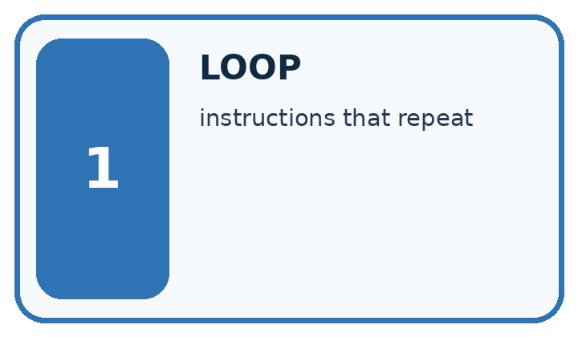
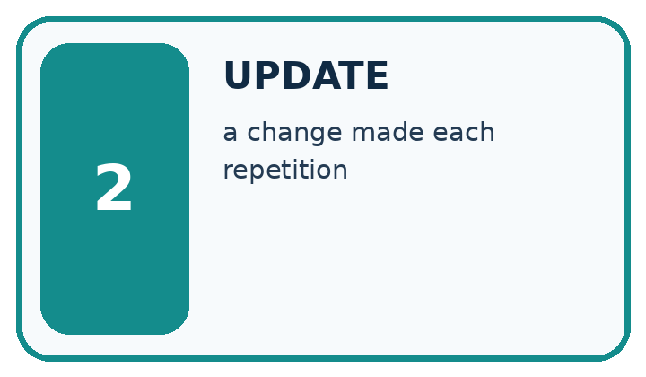
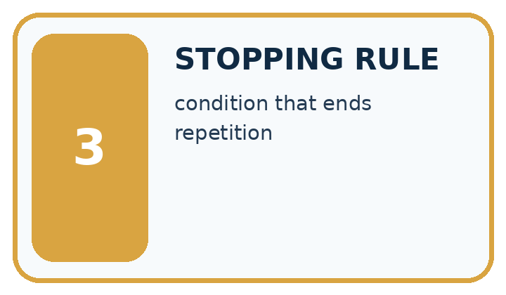
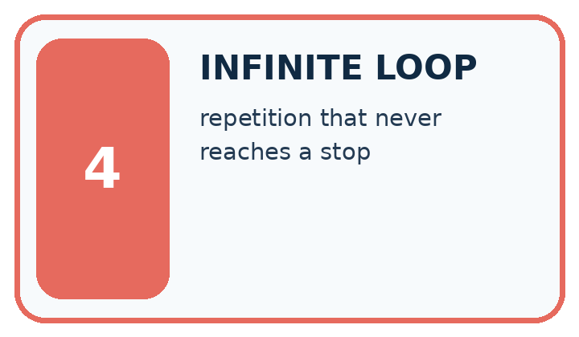
| Word | My own example | Not this / boundary |
|---|---|---|
| loop | A structure that repeats instructions according to a count or condition. | |
| update | Change a stored value or state according to a specified operation or new evidence. | |
| stopping rule | A specified condition that ends a repeated process. | |
| infinite loop | A loop that never reaches its stopping condition under the assumed execution model. |
Words used in the closer explanation
| Word | Meaning |
|---|---|
| Iteration | One execution of a loop body |
| Accumulator | A variable that keeps a running result |
| Initialization | Giving a variable its starting value |
| Trace table | A record of variable values as instructions execute |
Student lesson · 6 of 16
Follow a worked example
WORKED EVIDENCE
Reason Step by Step
Predict first. Then check each step. A correct answer without visible reasoning is incomplete evidence.
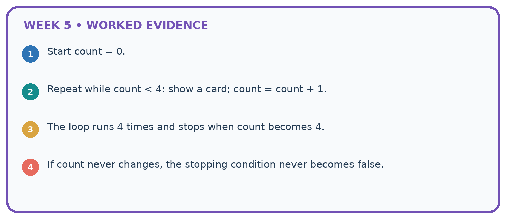
1. Start count = 0.
2. Repeat while count < 4: show a card; count = count + 1.
3. The loop runs 4 times and stops when count becomes 4.
4. If count never changes, the stopping condition never becomes false.
Recalculate, retrace, or restate the reasoning in your own representation:
CHECK Did the evidence answer the exact question? Did the total, path, or source record stay consistent?
A closer explanation
| Range expression | Values supplied | Number of iterations |
|---|---|---|
| range(1, 4) | 1, 2, 3 | 3 |
| range(1, 2) | 1 | 1 |
| range(1, 1) | No values | 0 |
| range(4) | 0, 1, 2, 3 | 4 |
With one argument, range starts at zero. range(4) supplies four values but none is 4. If the worked script uses range(1, 1), the body never runs and the initialized total remains 0. Do not rely on a variable first assigned inside a loop: a zero-iteration run might never assign it.
Learn from the worked case
Cover the result before checking it. Say what is given, choose the procedure, and follow one step at a time. Then uncover the result and explain your first mismatch. Ask why a step is allowed, not only what number it produces.
A pictorial worked case: Loops and Stopping
A fictional counter starts at 12 and decreases while above a boundary.
The facts we will use
Python: count=12; while count>3: count=count-4; print after the loop.
The condition is checked before each subtraction.
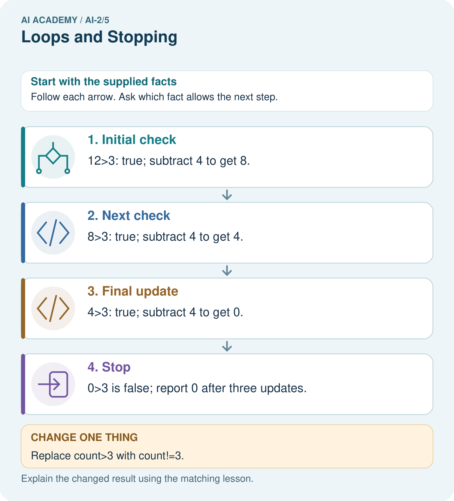
Read the picture one step at a time
Why this result follows
The condition does not promise the counter ends exactly at 3. Subtractions can cross the boundary. The count strictly decreases, so the below-or-equal stopping region is eventually reached from this start. A condition requiring exact equality can be unsafe when repeated updates skip that value.
What this example does not establish
Do not run an intentionally unbounded loop in class; trace a finite prefix to inspect the defect safely.
Read the labelled picture: Why is report 0 correct for the original loop, and why is equality-only stopping risky here?
Change one thing: Replace count>3 with count!=3. Predict the result before checking the explanation. What remains the same?
Student lesson · 7 of 16
Find and repair a mistake
ERROR DETECTIVE
Compare → Diagnose → Repair
Do not patch the answer. Find the earliest unsupported assumption, wrong step, or weak evidence.
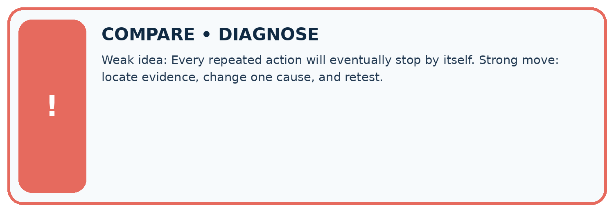
| Evidence record | Expected | Actual | Likely cause / next test |
|---|---|---|---|
| normal case | works | ||
| boundary case | stated rule | ||
| missing input | safe response | ||
| fresh transfer | generalizes |
Repair one cause. Why is this repair better than changing several things?
A closer explanation
Write the expected range values and trace table before running. Keep predicted and observed output separate, then explain the first row where they differ. For a loop that should add a fixed amount repeatedly, zero iterations should preserve the initial amount. One iteration checks one update; several check accumulation.
Student lesson · 8 of 16
Practise together
LOGIC STUDIO
Trace Before You Run
Block code, pseudocode, tables, and diagrams are different ways to expose the same reasoning.

SET evidence_record PREDICT expected_result RUN one normal case and one boundary case COMPARE actual_result with expected_result IF different: locate first cause; change one factor; RETEST EXPLAIN result, limitation, and next safe step
Trace one input. Which line changes the state or chooses a path?
A closer explanation
total = 0
for turn in range(1, 4):
total = 0
total = total + turn
print(total)This faulty version prints 3. The extra reset discards earlier additions on every iteration. Remove the indented reset while keeping initialization before the loop. Then test zero, one and several iterations: the one-iteration case alone cannot reveal this reset bug.
Moving print(total) into the correct loop produces three lines, 1 then 3 then 6. Moving it out produces only the final 6. Trace both values and output events. A loop follows written instructions; repeating them does not make the program learn.
Practise with less help: Trace before running
Use workbook W2 for the connected example “Loops and trace tables”. First fill the input and rule boxes. Try the middle steps before asking for a hint. After a hint, try the next step yourself.
| Plan | Do | Check |
|---|---|---|
| What is given? Which rule or procedure applies? | Record each intermediate step. | Does the result follow? What remains unknown? |
Explain your trace to a partner. Your partner points to one step to check. Swap roles on the next case. Each person writes their own explanation.
Check your reasoning
Use the worked case for Loops and trace tables. Proposed explanation: “The stop value is included”. Decide whether this explanation is supported. Point to the step or supplied fact that decides; explain your repair if needed.
Answer on your own before discussion. If you are unsure, say which step you need help with.
Explain the picture
Why is report 0 correct for the original loop, and why is equality-only stopping risky here?
This is supported practice. Keep the separately named independent case for an attempt before feedback.
Student lesson · 9 of 16
Run the investigation
EVIDENCE LAB
Predict → Test → Record → Explain
Keep expected and actual results separate. Surprises are useful data when recorded honestly.
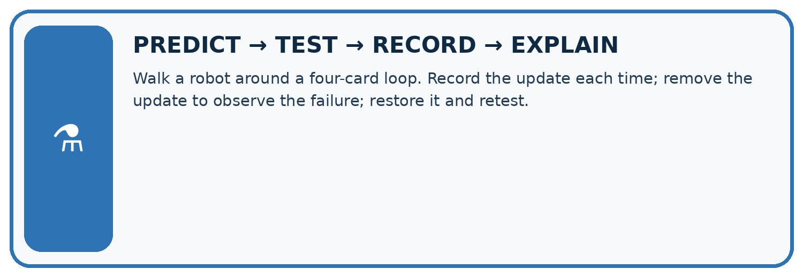
Walk a robot around a four-card loop. Record the update each time; remove the update to observe the failure; restore it and retest.
| Test / input | Prediction | Actual | Evidence / calculation | Change or keep? |
|---|---|---|---|---|
| normal | ||||
| boundary | ||||
| missing | ||||
| fresh transfer |
What did the hardest test teach you that the normal test did not?
Plan → try → check
Before trying: what do I expect, and why? While trying: which step could first go wrong? Afterwards: what did I actually observe, and what should change? Keep “not run” if you only traced the procedure.
Student lesson · 10 of 16
Build your understanding
MASTERY
From Knowing the Word to Owning the Idea
Move upward only when you can produce evidence without copying the worked example.

1 • NAME: Define the concept without repeating the textbook.
2 • TRACE: Show the information, state, branch, calculation, or evidence path.
3 • APPLY: Solve a different example independently.
4 • CHALLENGE: Find a boundary case, counterexample, or unfair outcome.
5 • EXPLAIN LIMITS: Say when the result should not be trusted or used alone.
My strongest evidence of independent understanding:
Student lesson · 11 of 16
Connect your project
CUMULATIVE PROJECT
Transparent Book Recommender
Every week adds one inspectable piece. The system must show how it reached a result.
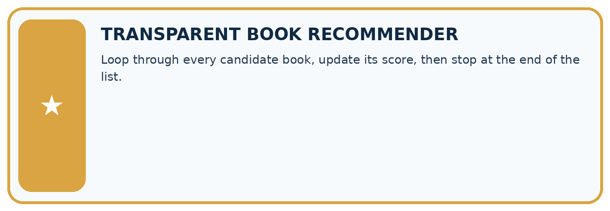
THIS WEEK’S CHECKPOINT Loop through every candidate book, update its score, then stop at the end of the list.
SYSTEM MAP Reader need → allowed inputs → transparent rule or score → ranked candidates → explanation → test record → human decision
What will you add, change, or verify in the project this week?
What should remain under human control?
RESPONSIBLE DESIGN Collect only necessary information. Show uncertainty and limits. Never confuse a ranking with a fact about a person.
Evidence for your project
Use progress and stopping arguments for any repeated recommender process; test inputs that require zero, one and several updates.
Student lesson · 12 of 16
Show what you know
INDEPENDENT MASTERY PROOF
Explain • Transfer • Test • Defend
Complete this page without copying the worked example. Your reasoning matters more than decoration.
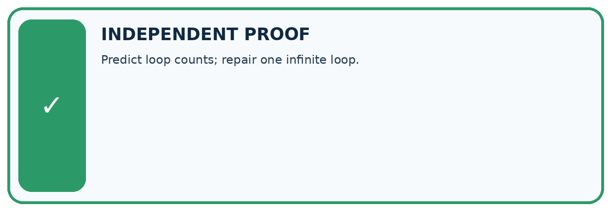
CHALLENGE Predict loop counts; repair one infinite loop.
1. My fresh example, trace, calculation, or design:
2. My evidence that it works (include a boundary or missing-data case):
3. One limitation, fairness concern, or situation needing human review:
SELF-CHECK □ I explained the mechanism □ I used evidence □ I tested a fresh case □ I named a limitation □ I can answer ‘why?’
Student lesson · 13 of 16
Study a complete case
Week 5 Worked case
Use the supplied details to practise the weekly concept before attempting the independent question. This case extends the illustrated lesson.
The situation
Start n=0; while n<3, add 1 and record n.
The question
List records and stopping condition.
Worked explanation
1,2,3. The next comparison is false. The update makes progress toward termination.
Explain it in your own words
Which detail supports the answer, and why does it matter?
Trace the supplied case visually
A loop must progress toward stopping
| Evidence or stage | Value or result |
|---|---|
| Start n | 0 |
| First update | 1 |
| Second update | 2 |
| Third update | 3 |
| Next n < 3 check | False, stop |
Start n=0; while n<3, add 1 and record n.
List records and stopping condition.
1,2,3. The next comparison is false. The update makes progress toward termination.
Student lesson · 14 of 16
Try a new case independently
Independent case: Changed independent case
Start count at 1. While count < 8, add 3. Trace the condition and values. What happens if the condition becomes count != 8?
Attempt this case before feedback. Record any help. Earlier examples below are further practice; a case already practised with feedback cannot establish fresh transfer.
Week 5 Independent application
Close the worked explanation. Apply the idea to this different question without copying.
Start at count 0. While count is less than 3, add 1 and display count. List the displays and the stopping value.
My answer, with a trace, calculation or supporting evidence
Create and test
Change one relevant detail. Predict the result before testing. Include a boundary or missing-information case when it helps reveal a limit.
My changed input and expected result
Connect to your project
Loop through every candidate book, update its score, then stop at the end of the list.
The evidence I will keep
Your teacher has the independent answer and scoring criteria. Complete the matching workbook week to keep your practice evidence together.
Transfer practice from the original programme
Trace count=0; while count<4: count=count+2. List values tested by the condition and final count. Would replacing <4 with !=5 terminate?
Use feedback to improve
Attempt the independent case before hints. Record whether you worked alone, used a hint or followed a model. After feedback, fix the first unsupported step and explain why it changed. A later check uses a changed case, not a copied answer.
Student lesson · 15 of 16
Your lesson route
Start with this question: A fictional counter starts at 12 and decreases while above a boundary.
| By the end, I can | How I will show it |
|---|---|
| Trace variable values before and after each loop iteration | Explain the deciding step, show a trace or test, and state one limit. |
| Use the excluded stop value in range correctly | Explain the deciding step, show a trace or test, and state one limit. |
| Explain initialization and test zero one and several iterations | Explain the deciding step, show a trace or test, and state one limit. |
Remember → watch and explain → try with help → investigate → try independently → keep project evidence. Your teacher may spread this lesson across several classes.
Keep your first prediction. Compare it with what the evidence shows and explain any change.
Student lesson · 16 of 16
Finish and return
Close your notes. Explain this goal in your own words: Trace variable values before and after each loop iteration
If you are unsure, return to the worked picture and explain one arrow. If you are ready, change an input or assumption and justify your prediction.
Save your workbook evidence. At the next review, try a different case before opening your old answer.